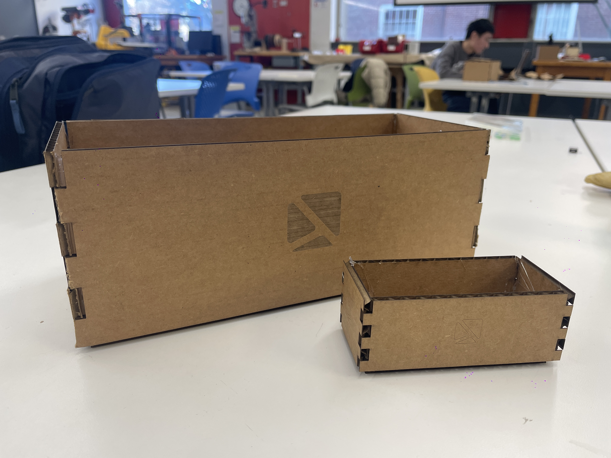

<div class="textcontainer">
<p class="margin"> </p>
<h2><strong> 1: The Box</strong></h2>
<p class="margin"> </p>
For the box, I created a finger joint box with my logo placed as a raster on each side of the box.
I used Fusion 360 to design the box and Rhino. I configured the UCP settings, with a 12% power for scoring,
and I specified the material thickness as 3mm mat board.
<div class="image-container">

</div>
<h2><strong> 2: Fusion360 Tutorial</strong></h2>
<p class="margin"> </p>
For the tutorial, I followed the tutorial from <a href="https://www.youtube.com/watch?v=6yPKMSb6ja8" target="_blank">
this link</a> to create a LEGO block using various Fusion 360 tools uch as extrusion, fillet, hollow, and array.
<div class="image-container">
</div>
<h2><strong> 3: 3D Objects</strong></h2>
<p class="margin"> </p>
To familiarize myself with the Fusion 360 software, I decided to start with simple objects.
I selected a hex nut and hex screw that I found in the lab, and then I recreated them in Fusion 360 using techniques
such as extrusion, chamfering, and creating threads
<div class="image-container">
<img src="assets/3.JPG" alt="Image 5">
</div>
<div class="image-container">
</div>